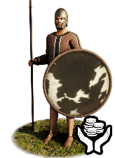
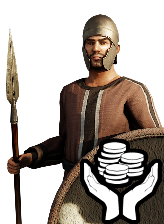
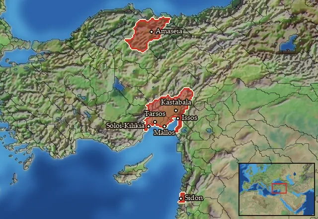

RTR: Imperium Surrectum
RTR: Imperium SurrectumMercenary Cilician Spearmen


Mercenary. Hired from a regional pool, not recruited from a building.
Class: spearmen · Category: infantry · Men per unit: 40
Description
Spears are an easy weapon to manufacture. A long wooden shaft with a sharpened metal point is relatively low-tech and low-cost. This provides an excellent opportunity for a group of people living in the periphery to gather a force to be reckoned with. It is, thus, no surprise that Cilicians from the remote southwestern part of Asia Minor were known for their mastery of the spear. In contrast to the Greek overhand use of the dory spear, these spears are used underhand. This light infantry unit is equipped with gear typical of Cilicia: woollen eastern tunics, small and big shields made of oxhide, and helmets. Their helmets are of the Samnite Attic, crested Attic, and Chalcidian types. Each spearman also carries two javelins.
Historical background
The Cilicians, known for their light infantry, fought with a variety of weapons. Herodotos (VII, 91) mentions Cilicians participating in the Persian naval invasion of Greece. He describes their equipment as consisting of a round shield made of raw oxhide, Cilician helmets, a woollen tunic, and two javelins.
There are some visual representations of spearmen that have been found in Cilicia. One is a votive stele from around 200 BC, found in Kilikia Tracheia, depicting two figures of Athena equipped with an aspis, shield, and spear. However, this depiction should not be taken as definitive evidence of Cilician military gear. During the late Hellenistic era, cities in Cilicia (Kilikia in Greek) began to mint their own bronze coinage. Epiphaneia in eastern Cilicia, for example, minted coins with Zeus holding a spear (SNG Levante, pl. 122, 1807-8). Further numismatic evidence suggests the use of Corinthian and Attic helmets, with the latter being more commonly depicted (SNG BN 258 ff = SNG Levante 78 f; SNG BN 251 = SNG Levante 71 [both from Tarsos, dating to the 370s BC]).
In terms of historical employment, Cilicians served as mercenaries in various Hellenistic armies. Being a rather poor region, life as a mercenary was attractive for many Cilicians. They were recorded as part of the Seleucid forces at the battle of Raphia in 217 BC, around two thousand lightly armed troops (Polybios V, 79). Later on, Polybios (XXXI, 25) mentions three thousand decorated Cilicians “armed in the manner of light infantry” participating in a procession at Daphne near Antioch in 165 or 164BC. Cilician spearmen could also be found fighting for the other Helenistic kingdoms. In Ptolemaic service, we clearly find a reference to their art of the spear. Theokritos' poem for Ptolemy II states: "He gives orders to all the Pamphylians, to the Cilician spearmen, to the Lycians and to the warlike Carians, and to the islands of the Cyclades, since his are the finest ships that sail the seas" (Theokritos, Idyll XVII). Later on, they were allied with the Pontic Kingdom against Rome (Plutarch, Pompeius, XXIV, 1).
After the death of Alexander, opportunities for mercenaries were plentiful, especially for Cilicians, as the Ptolemies and Seleucids battled for control of its coastal strip, the woodlands in the mountains (useful as timber for ships), and its important geographical location. The frontier moved back and forth, with the Seleucids controlling most of the plains with Seleukeia-Kalykadnos as its anchor. In 197 BC, Antiochos III conquered Rough Cilicia, but had to revoke most of his claims when he was defeated by the Romans at Magnesia seven years later. With the decline of the Hellenistic kingdoms, and the destruction brought by the Mithridatic Wars, life as a mercenary was less straightforward, even though in 165 BC the Seleucids still paraded Cilicians (Scarborough, The Funerary Monuments of Rough Cilicia and Isauria (2017), p. 13). It is thus no surprise that Cilicia became a hotbed for piracy in the first century BC, when there was no external state control.
Cilician units use oxhide for their shields. The Cilicians lived in two different regions: Rough Cilicia (Kilikia Tracheia) to the west of the Lamos River, east of Olbe, and Smooth Cilicia (Kilikia Pedias) up to the Syrian Gates close to Alexandria near the Issos. In Kilikia Pedias there is a vast floodplain, known as the Aleian Plain, where the mountains recede from the sea (Tobin, Black Cilicia. A Study of the Plain of Issus during the Roman and Late Roman Periods (2004), p. 1). Oxen were essential for ploughing in this fertile plain, where cereals, sesame, rice, and vines that produced a supreme muscatel grew. The population numbers remained low, however, as mosquitoes bred in the marshes. Flax was also cultivated. This was a resource for the linen industry (Jones, The Cities of the Eastern Roman Provinces (1998), p. 192). As a major trade route between Anatolia and Syria, these cows were also very useful for transporting goods.
Stats
| Rank in roster | Rank in roster | Rank in roster | Rank in roster | ||||||||
|---|---|---|---|---|---|---|---|---|---|---|---|
| Men per unit | 40 | ███······· 31% | Attack | 10 | ███······· 27% | Charge bonus | 7 | ███······· 29% | Defence | 31 | █████····· 47% |
| · armour | 3 | ██········ 22% | · defence skill | 25 | ███████··· 74% | · shield | 3 | ████······ 38% | Morale | 11 | ████······ 40% |
| Discipline | Impetuous (may charge without orders) | Training | Trained | Upkeep per turn | 588 dn | ████······ 37% |
Weapons
| Primary | Secondary | Primary | Secondary | Primary | Secondary | Primary | Secondary | ||||
|---|---|---|---|---|---|---|---|---|---|---|---|
| Attack | 10 | 9 | Charge bonus | 7 | 9 | Type | thrown · blade | melee · blade | Damage | piercing | piercing |
| Projectile | javelin | — | Range | 50 | — | Ammunition | 4 | — | Properties | Used just before charging into combat · thrown | Light spear (braced against cavalry charges from the front) · +8 attack against cavalry |
Defence
| Primary | Secondary | Primary | Secondary | Primary | Secondary | Primary | Secondary | ||||
|---|---|---|---|---|---|---|---|---|---|---|---|
| Total | 31 | — | Armour | 3 | — | Defence skill | 25 | — | Shield | 3 | — |
Condition and terrain
| Hit points | 1 | Ground: scrub / sand / forest / snow | 0 / 0 / -1 / 0 | Charge distance | 30 | Formations | Square |
Technical stats
| Time between blows (primary / secondary) | 2.5 s / 2.5 s | Extra fatigue in hot climates | 0 | Collision mass per man (1.0 is normal) | 0.85 | Spacing between men: close / loose | 1 × 1.2 m / 2 × 2.4 m |
| Default ranks | 5 |
In battle: Can sap · Very good stamina
Where to hire it
Mercenaries are hired from a regional pool, not recruited from a building. This unit is offered by 3 pools covering 7 regions, at 3,204–3,588 dn to hire and 0–1 experience.

At least one of those pools sells to any faction that has an army in range — no faction restriction.
Some pools additionally restrict it to Pontus · Ptolemaic Empire · Ptolemaic Rebels.
The 7 regions where this unit appears in a mercenary pool
Issikos Kolpos · Kilikia · Mallotis · Mese Kilikia · Pontos · Pyramos · Zidun